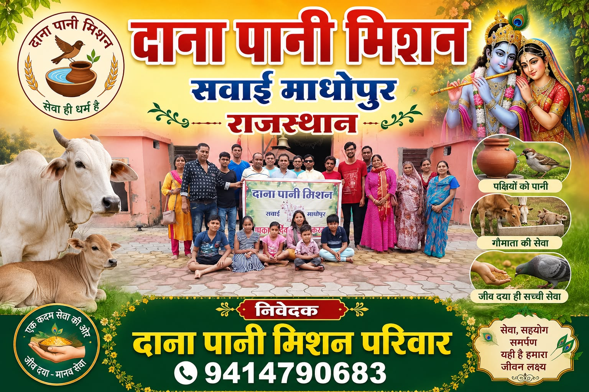
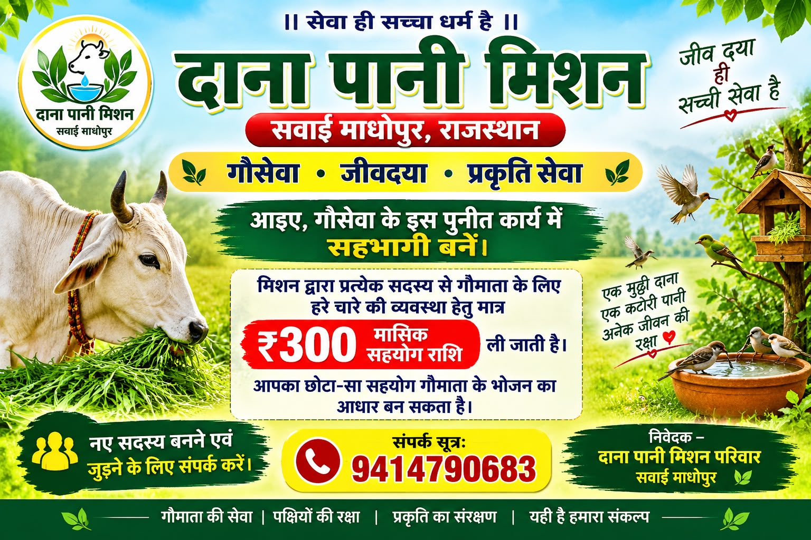
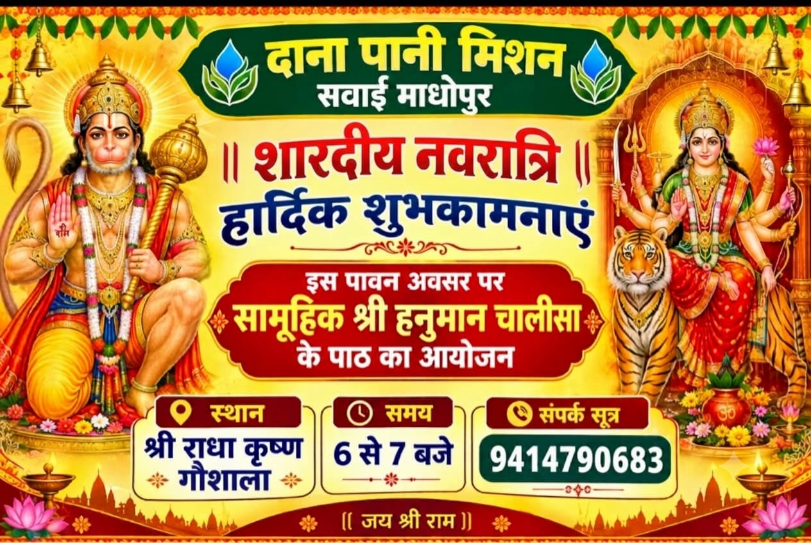
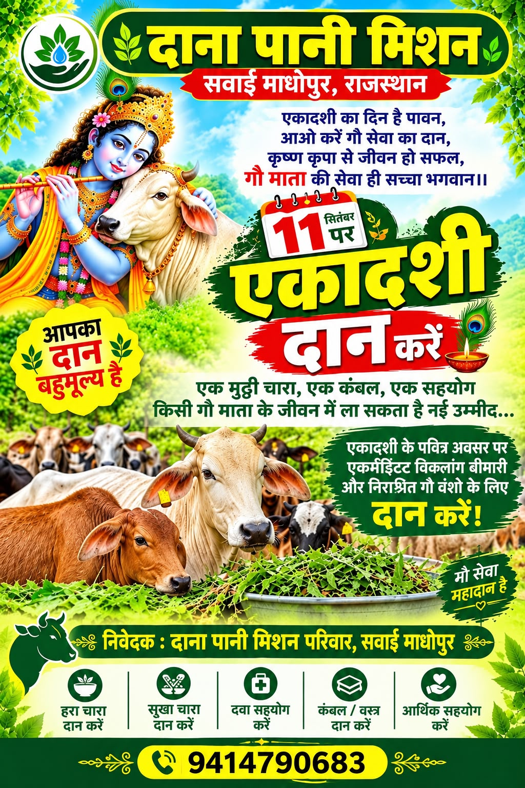
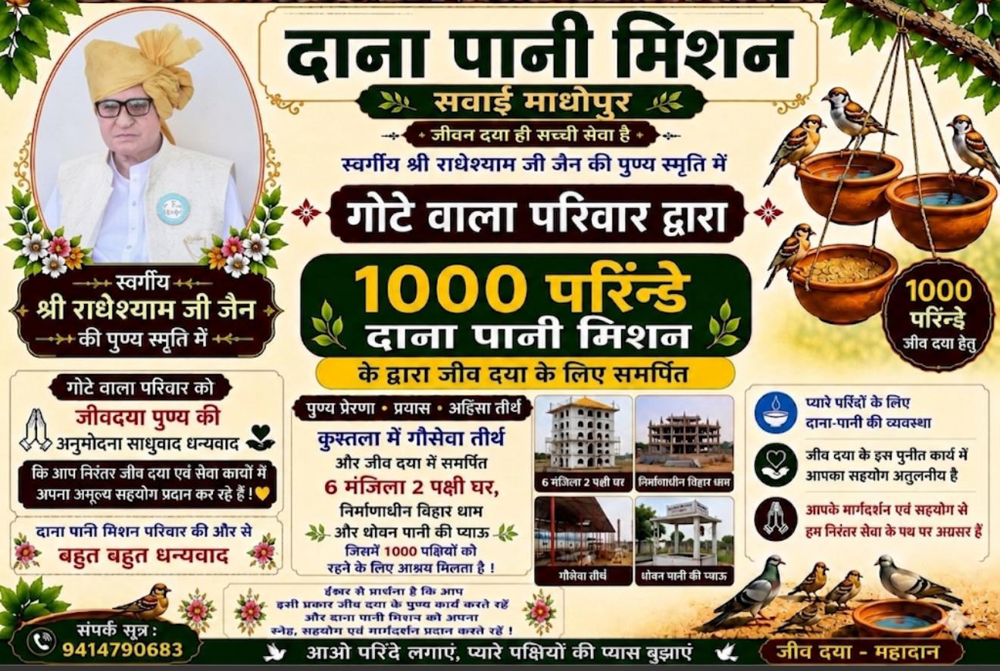
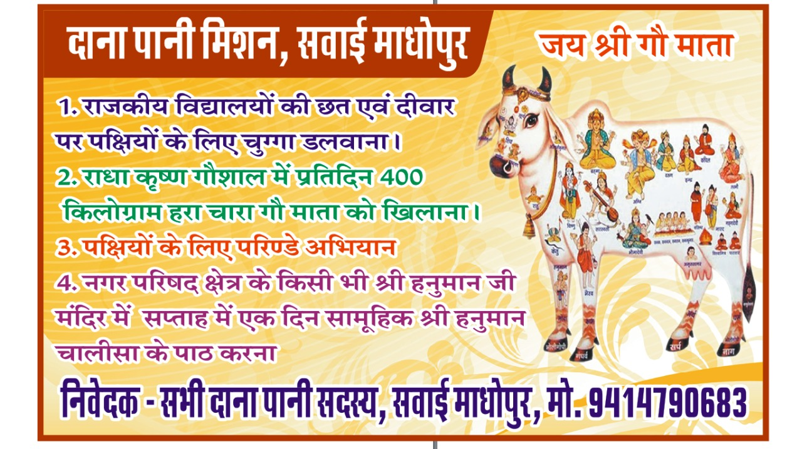

हरा चारा
गायों के लिए पौष्टिक हरे चारे की व्यवस्था।
सेवा ही सच्चा धर्म है
आपका मासिक सहयोग गायों तक हरा चारा पहुँचाता है। आइए, सवाई माधोपुर से शुरू हुई इस सेवा में साथ जुड़ें।

हमारा संकल्प
हमारा छोटा-सा प्रयास — बेज़ुबान जीवों को समय पर भोजन और पानी मिले। आपके सहयोग से यह सेवा निरंतर चलती है।
गायों के लिए पौष्टिक हरे चारे की व्यवस्था।
पशु-पक्षियों के लिए भोजन और स्वच्छ पानी।
करुणा और सामूहिक सहयोग से सेवा का विस्तार।
सेवा के कुछ पल
हरे चारे से लेकर दाना-पानी तक — मिशन की सेवा-यात्रा की कुछ झलकियाँ। हर तस्वीर के पीछे है जीवों के लिए थोड़ा और करने का संकल्प।
सहयोग का तरीका जानें
01मासिक सहयोग से चारे की सेवा को निरंतर आगे बढ़ाएँ।

02समुदाय के साथ मिलकर सेवा और सहयोग की भावना।

03आपका सहयोग गौमाता के भोजन और देखभाल में मददगार।
सवाई माधोपुर के सेवा-भावी साथियों की एक झलक।

05हर जीव के प्रति करुणा — यही हमारी सेवा का भाव है।

06हरा चारा, पक्षियों के लिए दाना और जीवदया के प्रयास।
हमारा परिवार
इन सभी सहयोगियों के प्रेम और विश्वास से हमारा मिशन आगे बढ़ रहा है।
आप भी जुड़ें
आपका नियमित सहयोग हरे चारे की व्यवस्था में मदद करता है। जुड़ने या सहयोग भेजने के लिए हमें कॉल करें।